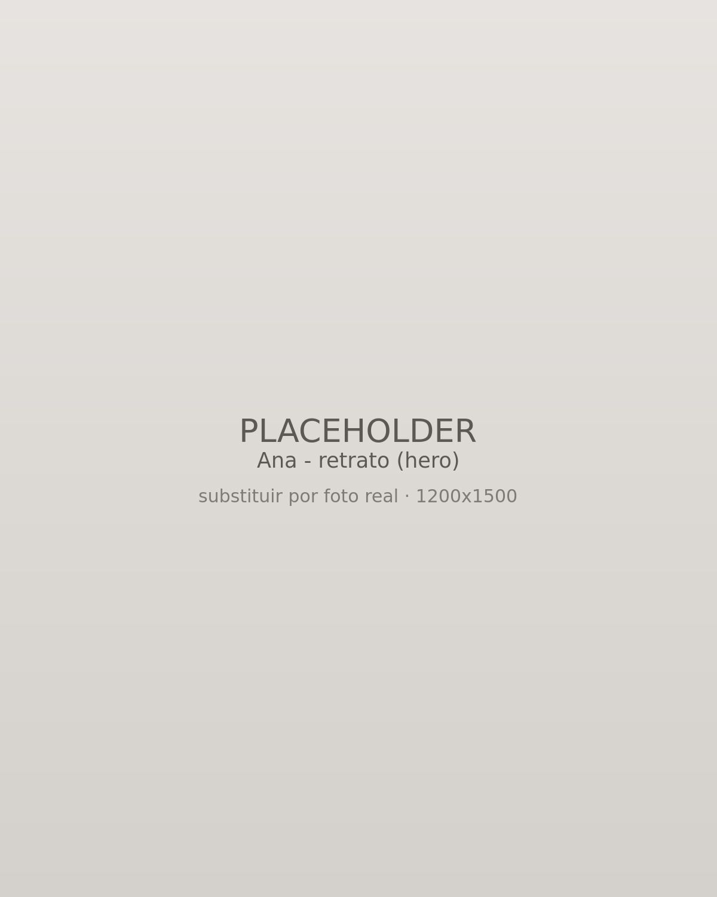
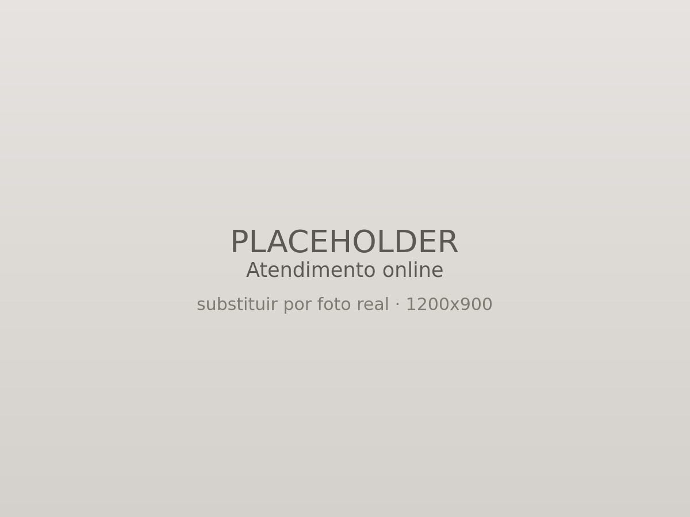
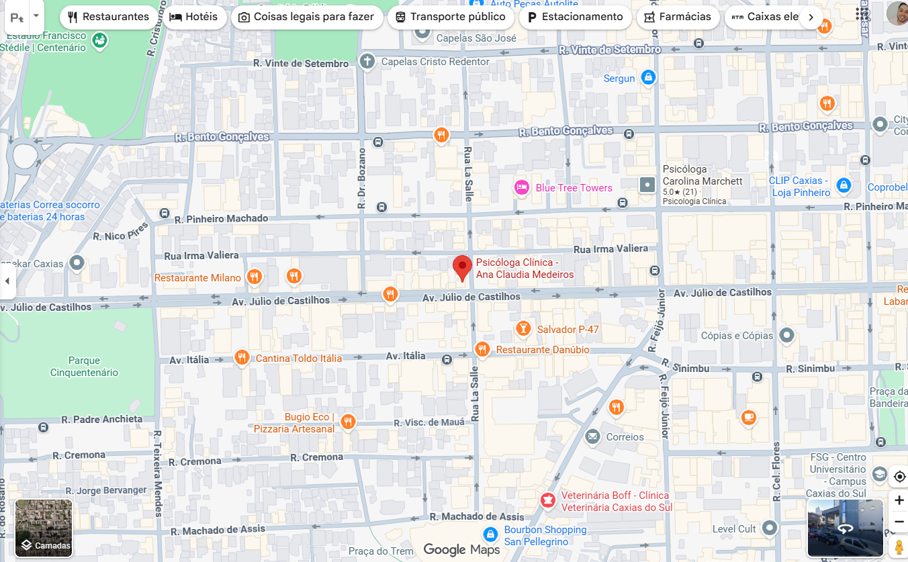

Psicoterapia individual
Atendimento psicológico individualizado para crianças e adultos, considerando as necessidades e particularidades de cada pessoa.
Psicologia clínica em Caxias do Sul
Psicóloga clínica
Atendimento psicológico para crianças e adultos, com escuta e acompanhamento individualizado. Presencial em Caxias do Sul e online para as demais regiões.


Sou psicóloga clínica em Caxias do Sul, com pós-graduação em clínica psicanalítica. Atendo crianças e adultos, e também conduzo processos de orientação profissional e de carreira.
Meu trabalho é orientado pela escuta e pelo acolhimento, respeitando o tempo e a história de cada pessoa. Cada atendimento é conduzido de forma individualizada, em um espaço reservado, ético e sigiloso.
O cuidado começa por ouvir, antes de qualquer resposta.
Três frentes de trabalho, todas conduzidas de forma individualizada e sigilosa.
Atendimento psicológico individualizado para crianças e adultos, considerando as necessidades e particularidades de cada pessoa.
Avaliação profissional e de carreira por meio de testes psicológicos, apoiando a tomada de decisão sobre o futuro.
Processos avaliativos para diagnóstico, concursos ou procedimentos cirúrgicos, com rigor técnico e sensibilidade clínica.
Escolha o formato que couber melhor na sua rotina. O cuidado é o mesmo nos dois.

No consultório em Caxias do Sul, em um ambiente reservado e acolhedor para crianças e adultos.
Agendar consulta presencial
Por videochamada, para as demais regiões do país, com a mesma privacidade do consultório.
Agendar consulta online
O primeiro contato é simples e sem compromisso. Me escreva quando quiser, e conversamos sobre como começar.
Agendar pelo WhatsApp